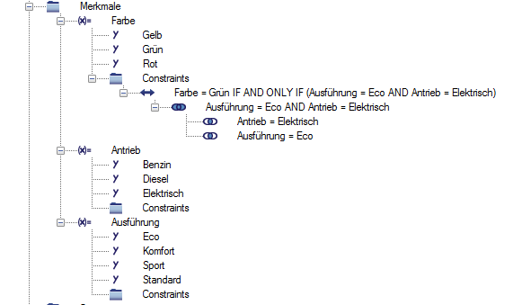

Variabilität modellieren¶
Merkmale¶
Die Variabilität eines Produkts wird über seine Merkmale beschrieben. Diese sind in vielen Aspekten den Katalogmerkmalen ähnlich.
Bemerkung
Um das Variabilitätsmodell bearbeiten zu können, muss einem Anwender die Rolle Administration: Variantenmanagement zugewiesen sein.
Neuanlage¶
Sie können ein Merkmal entweder im Kontext eines Produkts oder im Kontext einer Sicht anlegen. In der Neuanlagemaske können Sie entscheiden, ob Sie eine Vorlage aus dem Merkmalkatalog benutzen möchten, oder ob Sie das Merkmal ohne Vorlage manuell neu erfassen möchten.
Wenn Sie eine Vorlage aus dem Katalog verwenden, werden bei der Neuanlage neben den Stammdaten des Merkmals auch die Merkmalwerte aus dem Katalog übernommen. Bei der Neuanlage sind folgende Hinweise zu beachten:
- Katalogmerkmal
- Katalogmerkmale können von einem speziell dafür berechtigten Anwender definiert werden. Wenn eine Liste von Katalogmerkmalen vorliegt, kann hier ein Wert daraus ausgewählt werden. Grundsätzlich besteht der Katalog aus allgemeinen Produktmerkmalen wie “Komfort”, “Luxus”, “Standard”, etc...
- Produkt
- Wenn Sie das Merkmal aus dem Kontext eines Produkts heraus anlegen, ist dieses Feld bereits vom System mit dem Namen des Produkts vorbelegt. Der Wert kann nicht geändert werden.
- Name (de)
- Hier tragen Sie die deutsche Bezeichnung für das Merkmal ein. Dies ist ein Pflichtfeld.
- Name (en)
- Hier können Sie die englische Bezeichnung für das Mermkal eintragen. Diese Angabe ist optional
- Datentyp
- Als Datentyp haben Sie die Wahl zwischen
alphanumeric,numericundboolean. Die getroffene Wahl beeinflusst die Erfassung der Merkmalwerte. - Varianten treibend
- Wenn aktiviert, wird das Merkmal beim Generieren von Varianten berücksichtigt.
- Schnittstellenmerkmal
- Wenn aktiviert, kann oder muss das Merkmal für die Verwendung des Produkts als Modul innerhalb eines anderen Produkts verwendet werden (Siehe Modularität).
- Beschreibung
- Hier können Sie noch eine zusätzliche Beschreibung des Merkmals in Form eines Freitexts eintragen.
- ERP-Code
- Der ERP-Code muss innerhalb eines Produkts eindeutig sein. Standardmäßig ist das Feld mit
--auto--vorbelegt. Wird diese Vorbelegung nicht geändert, generiert das System automatisch einen eindeutigen Wert anhand der Werte, die für die hier genannten Attribute (z.B. Name (de)) definiert wurden.
Bemerkung
- Es gelten folgende Beschränkungen bei der Änderung des Datentyps eines Merkmals:
- Ein Merkmal mit Datentyp
alphanumerickann nicht auf den Datentypnumericgeändert werden. - Ein Merkmal mit Datentyp
alphanumerickann nicht auf den Datentypbooleangeändert werden. - Ein Merkmal mit Datentyp
numerickann nicht auf den Datentypbooleangeändert werden.
- Ein Merkmal mit Datentyp
Sortieren¶
Sie können die Merkmale innerhalb einer Trefferliste oder Strukturdarstellung umsortieren. Hierfür benutzen Sie die Kontextmenüoperationen Nach oben verschieben und Nach unten verschieben.
Bemerkung
Wenn Sie die Merkmale in einer Strukturdarstellung umsortieren,
müssen Sie die Struktur durch Drücken von F5 neu laden,
um den Effekt zu sehen.
Merkmalshierarchie¶
Mit Hilfe von Untermerkmalen können Sie Merkmalshierarchien erstellen.
Sie können Untermerkmale im Kontext eines Katalogmerkmals anlegen. Es gelten hierbei die gleichen Hinweise wie bei der Neuanlage von Katalogmerkmalen. Ein Untermerkmal kann dabei immer nur ein übergeordnetes Merkmal haben.
Merkmalwerte¶
Sie legen einen Merkmalwert im Kontext eines Merkmals an. CONTACT Virtual Product unterscheidet hierbei zwischen numerischen, alphanumerischen und boolschen Merkmalwerten. Bei numerischen Merkmalwerten genügt es, in der Neuanlagemaske eine Dezimalzahl einzutragen. Bei der Neuanlage von alphanumerischen Merkmalwerten sind die folgenden Hinweise zu beachten:
- Name (de)
- Hier tragen Sie die deutsche Bezeichnung für den Merkmalwert ein. Dies ist ein Pflichtfeld.
- Name (en)
- Hier können Sie die englische Bezeichnung für den Merkmalwert eintragen. Diese Angabe ist optional
- ERP-Code
- Der ERP-Code muss innerhalb eines Merkmals eindeutig sein. Standardmäßig ist das Feld mit
--auto--vorbelegt. Wird diese Vorbelegung nicht geändert, generiert das System automatisch einen Wert anhand der anderen Attribute.
Bemerkung
Wird ein Merkmal mit dem Datentyp boolean angelegt, so werden im Zuge der Neuanlage
automatisch zwei Merkmalswerte erzeugt und dem Merkmal zugewiesen.
Diese Werte sind jeweils mit 0 und 1 vorbelegt und können nicht geändert oder gelöscht werden.
Es ist außerdem nicht möglich einen neuen Merkmalswert für ein boolsches Merkmal
zu erstellen.
Berechnete Merkmalwerte¶
CONTACT Virtual Product stellt die Möglichkeit zur Verfügung, neue Merkmalwerte über die Kombination der Werte von abhängigen Merkmalen automatisch zu generieren.
Hierzu müssen Sie dem neuen Merkmal zunächst die abhängigen Merkmale zuordnen. Dies können Sie einfach per Drag&Drop durchführen: ziehen Sie hierfür einfach die abhängigen Merkmale mit der Maus auf das neue Merkmal.
Um dann die Merkmalwerte für das neue Merkmal automatisch zu generieren, rufen Sie aus dem Kontextmenü des Merkmals den Varianten-Editor auf.
Hier sehen Sie eine Tabelle, die alle möglichen Wertekombinationen auflistet. Wählen Sie die Kombinationen aus, die als Wert für das neue Merkmal generiert werden sollen, und drücken Sie auf den Button Speichern.
Sie können an dieser Stelle auch generierte Merkmalwerte wieder löschen.
Bemerkung
Sie können einem boolschen Merkmal keine berechneten Merkmalwerte zuweisen.
Constraints¶
Die möglichen Kombinationen von Merkmalbewertungen stellen die Varianten dar. Häufig sind aber nicht alle möglichen Kombinationen erwünscht. Sie können bestimmte Kombinationen ausschließen, indem Sie Constraints definieren.
Constraints sind Regeln, die alle gültigen Varianten erfüllen müssen. Sie werden aber auch verwendet, um Abbildungen zwischen Produktvarianten und Sichtvarianten zu definieren (Siehe Abbildungs-Constraints).
Constraints verwenden immer das folgende Muster:
<Property> <Operator> <Value> <Connective> <Expression>
Wobei:
<Property>ist ein im Produkt konfiguriertes Merkmal<Operator>ist entweder = oder != (gleich oder ungleich)<Value>ist ein Wert des Merkmals<Connective>ist entwederIFoderIF AND ONLY IF<Expression>ist ein über die bekannte Prädikate/Terme Logik aufgebauter Ausdruck (Siehe Prädikate und Terme)
Beispiel
Color = Green IF AND ONLY IF Model = ECO AND Power Unit=Electric
Prädikate und Terme¶
Ein Constraint besteht aus einem Kopfteil (z.B. Farbe != Rot) und einer Struktur von Prädikaten und Termen.
Terme stellen mögliche Bewertungen von Merkmalen dar
(z.B. Farbe = Rot, oder Farbe = Gelb).
Prädikate sind Sammlungen von Termen.
Semantisch werden alle Terme eines Prädikates mit einem logischen AND
verknüpft. Die Prädikate eines Constraints werden wiederum mit
einem logischen OR verknüpft.
Beispiel
Constraint Farbe = Grün IF AND ONLY IF Ausführung = ECO AND Antrieb=Elektrisch
Neuanlage¶
Constraints werden per Drag&Drop definiert. Ziehen Sie einen Merkmalwert auf den Ordner Constraints unter dem Merkmal. Damit wird ein Constraint angelegt, der zunächst nur den Kopfteil aufweist (z.B. Farbe = Grün). Um dann eine Merkmalbewertung hinzuzufügen, ziehen Sie einen Merkmalwert auf den neuen Constraint. Damit wird ein neues Prädikat mit der gewünschten Merkmalbewertung als Term angelegt.
Um einem Prädikat weitere Terme hinzuzufügen, ziehen Sie einen Merkmalwert auf das Prädikat. Um einem Constraint weitere Prädikate hinzuzufügen, ziehen Sie einen Merkmalwert auf den Constraint. Sie können im Datenblatt auch den Operator oder den Junktor ändern.
Beispiel
Wenn Sie beispielweise den Constraint
Color != Black IF AND ONLY IF Model = ECO AND Power Unit=Electric
definieren möchten, gehen Sie wie folgt vor.
- Ziehen Sie zuerst den Wert
Blackauf den Ordner Constraint unterhalb des MerkmalsColor. Damit wird der ConstraintColor = Blackerzeugt. - Ziehen Sie dann den Wert
ECOdes MerkmalsModelauf den neuen Constraint. Damit wird der Constraint wie folgt erweitert:Color = Black IF Model = ECO. - Ziehen Sie jetzt den Wert
Electricdes MerkmalsPower Unitauf das PrädikatModel = Ecounterhalb des Constraints. Hiermit wird der Constraint vervollständigt:Color = Black IF Model = ECO AND Power Unit=Electric. - Jetzt wählen Sie im Kontextmenü des Constraints die Operation
Ändern um den Operator und den Junktor zu ändern
(
Color != Black IF AND ONLY IF Model = ECO AND Power Unit=Electric).
Automatisch generierte Constraints¶
Das Variantenmanagement bietet die Möglichkeit, automatisch Constraints zu generieren, die genau eine Variante aus dem Lösungsraum ausschließen (siehe Toolbar).
Diese Constraints werden optisch durch ein spezielles Icon hervorgehoben und sind manuell nicht änderbar.
Bemerkung
Hierbei ist zu beachten, dass vom System generierte Contraints ungültig werden können, wenn Merkmale oder Merkmalwerte hinzugefügt oder gelöscht werden. Das System kann dann nicht mehr gewährleisten, dass diese Constraints genau ein Merkmal ausschließen.
Arbeiten mit Sichten¶
Sichten erlauben ein Beschreiben der Produktvariabilität aus unterschiedlichen Perspektiven. Unter Sichten versteht man einen differenzierten Aufbau von Produktstrukturen. Der Konstrukteur betrachtet das Produkt bevorzugt über eine funktionale Sicht, für den Arbeitsplaner eignet sich eher eine fertigungs- und montageorientierte Sicht wohingegen der Verkauf eher aus vertriebsorientierter Sicht auf das Produkt blickt.
Sie können eine neue Sicht im Kontext eines Produkts anlegen. Hierbei können Sie jeweils entscheiden, ob die neue Sicht zur Auswertung der Maximalstückliste verwendet werden soll. In diesem Fall werden die Maximalstücklisten nur anhand der Merkmale dieser Sicht gefiltert. Falls keine Sicht zur Auswertung der Maximalstücklisten entsprechend markiert worden ist, werden die Maximalstücklisten anhand der Produktmerkmale, d.h. jener Merkmale, die zu keiner Sicht gehören, gefiltert. Beachten Sie, dass Sie nur eine Sicht für die Bewertung der Maximalstücklisten markieren dürfen.
Zu einer Sicht können, analog zum Produkt jeweils eigene Merkmale, Constraints und Varianten definiert werden.
Abbildungs-Constraints¶
Solche Constraints, die nur dazu dienen, Produktvarianten auf Sichtvarianten abzubilden, heißen im System Abbildungs-Constraints. Jeder Constraint zwischen Produkt- und Sichtmerkmalen wird damit als Abbildungs-Constraint betrachtet.
Abbildungs-Constraints werden vom System im Vergleich zu normalen Constraints speziell behandelt. Zum Beispiel ist ihr Typ per Default IF AND ONLY IF, wenn diese über Drag&Drop neu angelegt werden. Darüber hinaus dürfen Abbildungs-Constraints nur für Sichten definiert werden. Wenn Sie versuchen, einen Abbildungs-Constraint auf Produktebene zu definieren, erzeugt das System eine entsprechende Fehlermeldung. Abbildungs-Constraints zwischen unterschiedlichen Sichten sind ebenfalls nicht erlaubt.
Variantenabbildung¶
Sie können Sichtvarianten manuell einer Produktvariante zuordnen, das bedeutet, dass Sie manuell eine Abbildung zwischen einer Sicht- und einer Produktvariante herstellen. Hierfür ziehen Sie die Sichtvariante auf die Produktvariante in der Produktübersicht. Alternativ können Sie das Variantenmapping auch direkt im Varianten-Editor erstellen (Siehe Kombinierter View).
Die Variantenabbildung wird sowohl beim Filtern von Maximalstücklisten als auch beim Ausprägen von Artikeln ausgewertet.